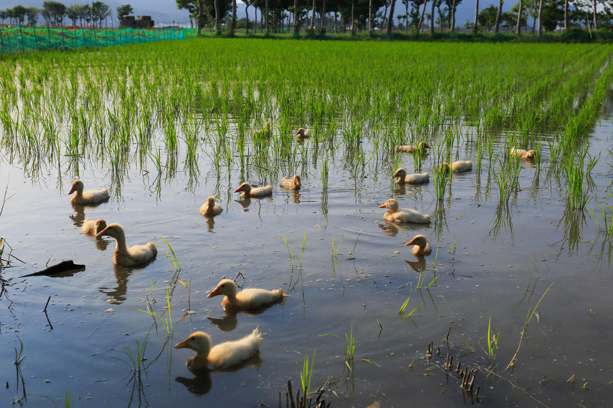

Indian Runner Ducks
Indian Runner ducks, historically known as penguin ducks, have a distinctive upright stance and are known for being productive egg-layers and resourceful foragers. They also have a very characteristic gait, running instead of waddling like most ducks. Sometimes, they may be affectionately compared to bowling pins.
Indian runners come in a wide variety of colors from solid white, chocolate, blue, and fawn to more complex patterns like grey (mallard), penciled, and trout. We will be trying to hatch a wide variety of duckling colors, and plan to have ducks and ducklings available for sale this spring. Please let us know if you are interested!